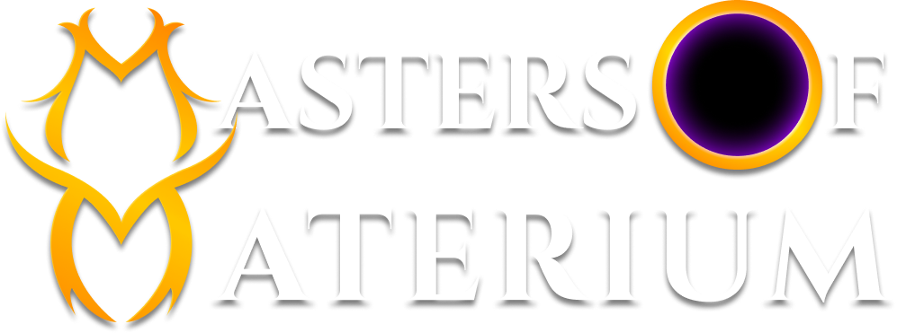
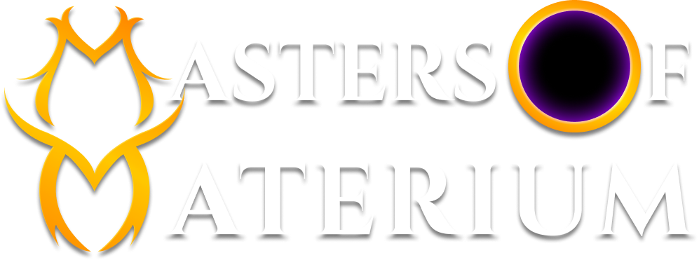

Maximum Medieval Fun and riches

Maximum Medieval Fun and riches
Our goals are simple:
Become the most profitable* Mirandus guild for all our members.
Be the “funnest” Mirandus guild.
There are 2 “games” in Mirandus:
Players who want to explore, raid, hunt and craft in Mirandus.
Asset holders who want to win at the bigger economic game including owners of: deeds, buildings and naval assets.
The purpose of the guild is to give you the opportunity to win whichever game you want to play.
We believe that no other Guild will be able to compete with us in the economic game. We feel we have an incredible head start on the economic dominance of Mirandus. There will be many economic opportunities in Mirandus for exemplars and it’s our goal to give them every possible advantage so they can maximize their Materium and FUN.
Our primary economic focus is controlling FOOD in Mirandus. We believe we already have a very strong headstart and it will be extremely difficult for any other Guild to catch up.
We are structuring the guild in a hyper-organized manner to maximize efficiency and effectiveness. Our goal is to give every type of Mirandus player the greatest advantages possible.
Create a structure that allows everyone the opportunity to potentially maximize their return on their assets as they wish. Give all members agency and independence while offering significant benefits.
Create a Guild that synergizes members’ assets to potentially maximize their returns.
Creates opportunities and unique benefits for smaller teams who want to remain independent while still benefiting from joining a bigger guild.
Create every type of specialized team required in Mirandus to maximize productivity in every Mirandus game loop.
Create elite raid teams for the toughest, most rewarding missions.

Anyone who owns any deed (except the Homestead) including naval docks and joins M.O.M. will automatically be a member of the Dynasty Council.
We have special economic opportunities* for anyone who owns a Farming Hamlet, Ranching Hamlet or Village Of The Farmer.
Get access to our optimized strategies that may maximize your Materium gains.
We can offer deed owners significant advantages through economies of scale, hyper efficiency, access to top level buildings, optimized transport routes, access to labor and other economic edges.
Ability to run your deed for you (if you want to be hands off):
Access to a mass base of exemplars to purchase their goods and services from you.
Find spots to place your buildings. We can’t make any guarantees, but we do have some Deed owners who are looking for building owners.
Ability to find exemplars to work in your buildings.
Maximize use of all buildings by having groups of exemplars working to maximize its utility and profits.
Keep your boats (Picard, Crayer, Hoy, Cog, Carrack, Caravel) busy with:
Find boat owners to fill your docks, quay, wharfs and piers.
Anyone who owns any exemplar and joins M.O.M. may become an Exalted Exemplar
We are going to create hyper organized Exemplar Clans for:
Advantages for M.O.M.’s Exalted Exemplars:
This is for anyone who does NOT own any exemplars, but wants to play Mirandus.
We will have PLENTY of opportunities for players who don’t own ANY assets but want to play Mirandus and maximize their opportunities*.
We love the idea of a DAO. We want to give YOU a voice. Our plan is to have everyone in the Guild have votes and the “volume of your voice” will first be based on the value of the assets you have. We have already built a highly developed point system for all Mirandus assets to attempt to accurately assess the value of each player’s Mirandus NFTs.
We will be co-creating the DAO vision with you and other members of M.O.M. over the next few months.
Two of the co-founders, Grill and Aaelim (along with a few other M.O.M. Dynasty Council), have been gaming together since 2007. They were one of the most dominant teams in WOW. They have been accumulating Mirandus assets (ArchDuke, Duke, Marquess, Villages, multiple Hamlets and many other significant NFTs) since Gala announced Mirandus.
Virtuwul started an aggressive Mirandus asset buying spree in the beginning of 2022 (including Duke, Marquess, Caravel, 2 Villages and multiple Hamlets). Aaelim and Grill were tracking his purchases and decided to reach out to see if there could be some opportunities to team up.
After a few weeks of chatting and conversations, Virtuwul, Grill and Morrow (Dynasty Council member) decided to meet at Galaverse 2 in Malta. They had a great time, quickly bonded and officially agreed to create the M.O.M. Guild a few weeks later.
Now we want YOU to join us in co-creating the story of M.O.M’s ascent in the world of Mirandus.

I come from a family that values gaming of all kinds. My father taught me how to play chess (I played competitive chess as a kid). My grand-father taught me how to play poker at the age of 8 (I still play poker and have won decent sized tournaments). I once won 52 Monopoly games in a row with my cousins due to the fact I was able to optimize my strategies and they weren’t.
I started video gaming at the age of 4 years. My parents bought me a Vectrex console and I became instantly hooked. I loved the learning curve and the challenge.
Throughout the years, my parents gifted me all of the consoles Nintendo, Sega Genesis and PCs. Playing video games was my main obsession until I was 16.
In my late teens, my passion for gaming faded and was replaced with a passion for a MUCH bigger game: business. I started my first real company when I was 19 years old. I started building businesses online in 2002 and haven’t looked back.
Since that time, I’ve built 14 profitable companies in multiple industries. My companies have sold 9 figures worth of products and services. Business wise, my current main company is in the top 300 fastest growing companies in America in 2022 on Inc’s 5000 list.
I heard about Bitcoin mining in 2011 and decided against doing that but I was intrigued. I kept monitoring BTC and decided to take the plunge in mid 2013 before the big parabolic run at the end of the year. Since that time I’ve invested in hundreds of projects. I’ve had my fair share of both big wins and losses. But overall, it’s been a great ride.
Thanks to COVID, I got back into video gaming. A close friend gave me his PS4 for my birthday and got me into Call Of Duty Warzone. I had never played a FPS in my life and I instantly fell in love with the camaraderie of playing with friends and the hardcore skill gap.
During that time, I started paying attention to the P2E (play to earn) projects. I instantly saw that this is the inevitable evolution of games. It got me excited to play a BIGGER, HIGHER STAKE game: winning in real virtual economies.
I got into the GALA ecosystem and saw Mirandus. Frankly, I wasn’t sold right away. The low-fi graphics turned me off, but when I heard Michael McCarthy (the lead game designer) describe his vision I got sucked in. I’ve never been more excited to go deep into a gaming world like I am for Mirandus.
Mirandus is my dream game: a dangerous challenging world with real risks and HIGH stakes. I’m excited for opportunity to work together as a team and co-create the #1 Guild in this fascinating virtual universe.
My main strengths are: vision, strategy, marketing and optimization. Those are my key roles in M.O.M. I’m excited to apply all of my business and leadership skills to help YOU make more money and have more fun in Mirandus.
Virtuwul
P.S. Where does the name Virtuwul come from? I was really enthralled with the story of Beowulf in high school and I needed a cool online name so I combined the “Virtue of BeoWULf”. Plus it had a cool second meaning as an unusual way to write “virtual” (reality), which I’ve always been fascinated with.

My gaming career started at an early age. I’ll never forget going downstairs on my 7th birthday. I walked into the kitchen and on the table was a NES system with my sister playing Duck Hunt. I was blown away and instantly hooked.
Not long after, my parents got our first PC, an IBM PS/2. Between those beautiful pieces of 80s machinery, my love for gaming blossomed into what it is today. Through the years I played with many consoles and while I loved and spent many hours playing console games, there was always something about PCs games that had that extra bit of magic to them.
Some really memorable games for me are: the old Star Wars flight and combat sim games X-Wing and TIE Fighter series, the original Sim City and Sim City 2, a very obscure text based MMO or MUD called Gemstone 3/4, Oregon Trail (yes I too died of dysentery many times). And of course Blizzard Games captured my heart and mind with: Warcraft 1, 2, 3 & Diablo 1 and what’s in many ways still my favorite game of all time Diablo 2. Hundreds to thousands of hours were sunk into these titles.
Eventually I took a break from PC gaming and went back to consoles with PS1, 2, 3 and Xbox 1 and 2. This continued until about my mid 20s when I decided to build a PC. This was soon followed by a life changing decision, I watched an episode of South Park. Not just any episode but the World of Warcraft one. While the episode is incredibly funny and on point I was amazed that such a game existed.
I had heard of WoW but never really looked into it. But once I was exposed there was no going back. I had just discovered the game of my dreams.
During this time I connected with Aaelim (our Master Of Coin) and a few other key members of M.O.M. Together, we had a blast and we did really well. Without going into the expanded and finer details of my entire WoW career, I was soon leading a guild named “UNREST” (which is also the name for M.O.M.’s AAA Raid Team) to a top 200 position worldwide within just 6 months and held that spot for the entirety of the Burning Crusade expansion.
The guild unfortunately wasn’t able to survive the downtime between BC and WOTLK so I took my services to the next top guild on the server and within a month they were top 200 as well and again held it to the expansion's end.
After 4 years of leading server progression I took my leave from WoW. I’ve since played many games with high levels of success. Other MMOs include Aion, Tera, FF14. I’ve played a significant amount of LoL as well (30k+ games overall), with ELO peaking at Diamond in multiple seasons.
My venture into crypto is a relatively new one, starting in early 2021. It’s been a journey of great success thanks to some good mentoring from Aaelim, luck and timing. Starting with purchasing a mere $500 worth of Bitcoin in late Feb 2021 it wasn’t long before I dove in head first HARD, FAST and DEEP(one of our core principles at M.O.M.).
My focus quickly shifted to Gala and Gala NFTs. My luck struck gold in January 2022. Through a series of aggressive reinvesting, flipping and trades I landed my crown jewel, a Town of the ArchDuke which is the best possible deed in Mirandus besides the Citadels.
I truly believe that Mirandus is the ULTIMATE GAME. It combines elements of all my favorite games with a REAL economy. I haven’t been this excited for a game in years. I’m ready to devote the next decade of my life to Mirandus and M.O.M.
My strengths are organizing teams. I’ve managed teams of 40 people in a family business in real life and over 200 members in WoW.
That’s why my title is COO (chief operating officer) and my role is to help organize, train and structure various teams in Mirandus for maximum effectiveness and efficiency. I feel like my entire life has groomed me for my career and being a full time Mirandus player and team leader.
Our original WoW team is all here and with Virtuwul’s leadership, Aaelim’s financial strategies, our combined assets and with YOU, we will become the most dominant Guild in Mirandus. It’s been quite the wild ride so far and I’m looking forward to what the future brings.
I look forward to helping YOU maximize your fun and earnings in Mirandus. Together, we will have many legendary raids that you will be telling your children and grand-children about.
Grill
P.S. If anyone is wondering where “Grill” comes from, it’s actually short for Grillox which was the main character and hero from short stories written as a kid. It’s the online avatar and name I’ve used through my entire gaming career. There have been a few other names that I’ve used over the years but this is how I’m known to everyone in the online world
I started playing video games in the 80s. I’ve played every mainstream console system since that time with games from every genre. However, my passion has been RPG and strategy games. I love out-strategizing my competition and go 100% (HARD, FAST AND DEEP) into any game that I enjoy.
For online games my first MMORPG was The 4th Coming in 97’ which I played for years and that was the point where I shifted primarily to PC games.
I have maximum level characters in most MMORPGs. The majority of my time has been in World of Warcraft which I played off and on since vanilla with Grill and other members of M.O.M.
I last played WoW in 2020 at which time I was the richest WoW player on a single server, with over 800 million gold. At the peak I was earning just over 20 million net gold per day, which to put in perspective was multiple times higher than the 17,000 players across the connected realms combined.
There were a couple slightly richer players in WoW, but those players have assets across many different servers which is a far easier task to accomplish given that a server only has so much gold on it.
As far as crypto goes, I was one of the earliest to enter the crypto space, mining my first bitcoin block in November of 2009. I've mined SHA-256, Scrypt, EtHash, and Equihash in that order with some overlap. I started regularly doing crypto arbitrage by 2015 up until early 2021, at which time I switched my main focus to NFT gaming. NFT gaming is the intersection of my two biggest passions: gaming and finances.
I live solely on crypto, to the point of not holding funds within the traditional banking system since 2013
My first success with NFT gaming was with Alien Worlds, then I moved onto other Wax games. I started to buy into other crypto gaming projects by March 2021, with Gala NFTs being most of my purchases. I have assets in most Gala games and multiple other non-gala or Wax games including but not limited to Synergy Land, Galaxy of Lemuria, and Star Atlas.
Mirandus is THE GAME and M.O.M. is THE GUILD. I don’t think you will find another Guild with our assets, our team, our strengths and our strategies. If you want to join a winning team, stop looking cause you’ve found it.
My strengths are maximizing in-game advantages and optimizing economic strategies. That’s why my title is CFO (chief financial officer) AKA “The Master Of Coin”. My role is to create optimized financial strategies for M.O.M. and my goal is to help YOU maximize your returns inside of Mirandus.
I believe Virtuwul and I have already created what we think is the most sophisticated economic model for Mirandus outside of the Mirandus team. We have already created several sophisticated strategies to maximize our edges in Mirandus.
One of our core principles is to stack every possible edge. Hopefully this doesn’t come off as hubris, but I believe we are already 100 steps ahead of the average Mirandus player and we just plan on widening that lead when the game starts.
Aaelim
P.S. I'm a hardcore gamer to the point that my character name Aaelim was written with 2 A's because groupwide achievements are usually sorted alphabetically, making a name with AA virtually always the first to acquire that title/reward. I even named my son Aaelim after my gaming character. In WoW I went by Spikster, but every other game it is Aaelim.
* M.O.M. makes no promises or guarantees for any returns on investment. All mentions of “profits”, “profitable”, “returns”, “economic opportunity”, “riches”, “ROI” are potentials and possibilities that may or may not be actualized based on your own efforts, the success of Mirandus and the success of M.O.M.. There are many risks involved in the project of Mirandus including the game never launching, the game failing and numerous other risks. M.O.M. has the same risks as any other business.
 Make sure to join our Discord to join in the conversation.
Make sure to join our Discord to join in the conversation.